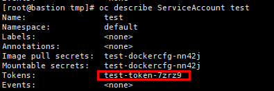

当后续需要通过Token认证的方式注册集群时，可参考本节操作获取超级管理员的Token。使用本节方法获取的Token可永久使用。
操作步骤
- 通过后台登录Kubernetes集群。
- 执行以下命令，使用指定名称创建服务用户。后续步骤以创建的用户名为test进行说明。
oc create serviceaccount 用户名
- 执行以下命令，给“test”用户授予“cluster-admin ”角色。
oc adm policy add-cluster-role-to-user cluster-admin -z test
- 执行oc describe ServiceAccount test命令获取用户的secret名称，对应值为“Tokens”参数值。

- 执行以下命令获取Token信息，“token”参数值即为超级管理员的Token（“test-token-7zrz9”为4获取的secret名称）。
oc describe secret test-token-7zrz9